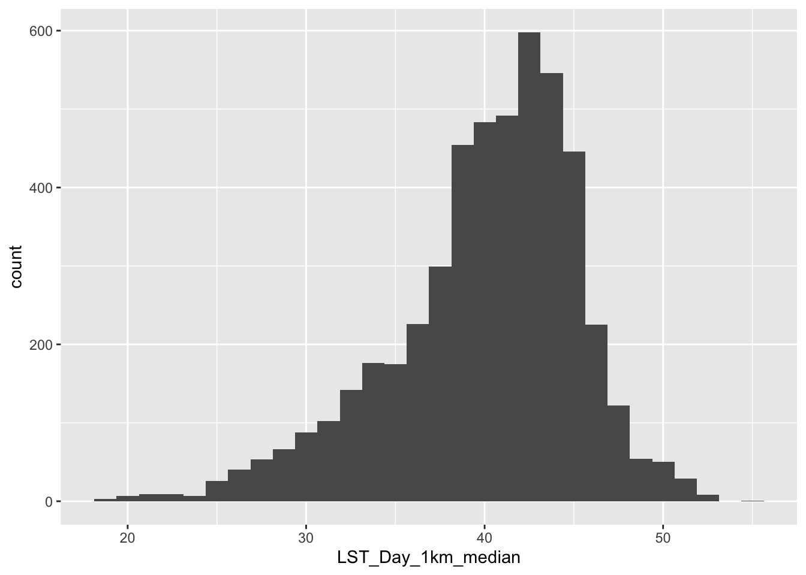

Lab Assignment 4 Answer Key
Peter James
2025-04-30
Load Packages
library(sf)## Linking to GEOS 3.13.0, GDAL 3.8.5, PROJ 9.5.1; sf_use_s2() is TRUElibrary(MapGAM)## Loading required package: sp## Loading required package: gam## Loading required package: splines## Loading required package: foreach## Loaded gam 1.22-5## Loading required package: survivallibrary(tidyverse)## ── Attaching core tidyverse packages ──────────────────────── tidyverse 2.0.0 ──
## ✔ dplyr 1.1.4 ✔ readr 2.1.5
## ✔ forcats 1.0.0 ✔ stringr 1.5.1
## ✔ ggplot2 3.5.2 ✔ tibble 3.2.1
## ✔ lubridate 1.9.4 ✔ tidyr 1.3.1
## ✔ purrr 1.0.4## ── Conflicts ────────────────────────────────────────── tidyverse_conflicts() ──
## ✖ purrr::accumulate() masks foreach::accumulate()
## ✖ dplyr::filter() masks stats::filter()
## ✖ dplyr::lag() masks stats::lag()
## ✖ purrr::when() masks foreach::when()
## ℹ Use the conflicted package (<http://conflicted.r-lib.org/>) to force all conflicts to become errorslibrary(flextable)##
## Attaching package: 'flextable'
##
## The following object is masked from 'package:purrr':
##
## composelibrary(RColorBrewer)
library(tmap)
library(terra)## terra 1.8.29
##
## Attaching package: 'terra'
##
## The following objects are masked from 'package:flextable':
##
## align, colorize, rotate, width
##
## The following object is masked from 'package:tidyr':
##
## extractQ1. Bring in CAdata
data(CAdata)
ca_pts <- CAdata
ca_proj <- "+proj=lcc +lat_1=40 +lat_2=41.66666666666666
+lat_0=39.33333333333334 +lon_0=-122 +x_0=2000000
+y_0=500000.0000000002 +ellps=GRS80
+datum=NAD83 +units=m +no_defs"
ca_pts <- st_as_sf(CAdata, coords=c("X","Y"), crs=ca_proj)Q2. Bring in raster data
url <- "https://github.com/pjames-ucdavis/SPH215/raw/main/LST_med_ca.tif"
download.file(url, destfile = "LST_med_ca.tif", mode = "wb")
lst_rast = rast("LST_med_ca.tif")
lst_rast## class : SpatRaster
## dimensions : 1056, 1153, 1 (nrow, ncol, nlyr)
## resolution : 0.008983153, 0.008983153 (x, y)
## extent : -124.4885, -114.131, 32.528, 42.01421 (xmin, xmax, ymin, ymax)
## coord. ref. : lon/lat WGS 84 (EPSG:4326)
## source : LST_med_ca.tif
## name : LST_Day_1km_medianQ3. Check projections
st_crs(ca_pts)==st_crs(lst_rast)## [1] FALSEQ4. Reproject CAdata to match LST data
ca_pts_proj<-st_transform(ca_pts,st_crs(lst_rast))
st_crs(ca_pts_proj)==st_crs(lst_rast)## [1] TRUEQ5. Overlap map of CAdata with LST data
ca.lst.map <- tm_shape(lst_rast) +
tm_raster(style = "cont") +
tm_shape(ca_pts_proj) +
tm_dots(size=0.25, alpha=0.8, col="red")## ## ── tmap v3 code detected ───────────────────────────────────────────────────────## [v3->v4] `tm_raster()`: instead of `style = "cont"`, use col.scale =
## `tm_scale_continuous()`.
## [v3->v4] `tm_dots()`: use 'fill' for the fill color of polygons/symbols
## (instead of 'col'), and 'col' for the outlines (instead of 'border.col').
## [v3->v4] `tm_dots()`: use `fill_alpha` instead of `alpha`.ca.lst.map
Q6. Extract light at night data to cancer data
lst_cancer = data.frame(ca_pts_proj,terra::extract(lst_rast, ca_pts_proj))
glimpse(lst_cancer) ## Rows: 5,000
## Columns: 7
## $ time <dbl> 1.2759763, 4.2121775, 0.2074870, 3.5099074, 10.2977…
## $ event <dbl> 1, 1, 1, 1, 0, 1, 0, 1, 1, 1, 1, 1, 0, 1, 1, 1, 1, …
## $ AGE <int> 67, 56, 67, 69, 75, 59, 62, 39, 68, 72, 78, 79, 46,…
## $ INS <fct> Mcr, Mcd, Mng, Mcr, Mng, Mcr, Oth, Uni, Uni, Uni, M…
## $ geometry <POINT [°]> POINT (-122.3492 38.3025), POINT (-118.0174 3…
## $ ID <dbl> 1, 2, 3, 4, 5, 6, 7, 8, 9, 10, 11, 12, 13, 14, 15, …
## $ LST_Day_1km_median <dbl> 36.49, 43.17, 43.43, 36.53, 38.25, 43.45, 39.49, 40…## Take a look at a summary of the values
summary(lst_cancer)## time event AGE INS
## Min. : 0.004068 Min. :0.0000 Min. :25.00 Mcd: 431
## 1st Qu.: 1.931247 1st Qu.:0.0000 1st Qu.:53.00 Mcr:1419
## Median : 4.749980 Median :1.0000 Median :62.00 Mng:2304
## Mean : 6.496130 Mean :0.6062 Mean :61.28 Oth: 526
## 3rd Qu.: 9.609031 3rd Qu.:1.0000 3rd Qu.:71.00 Uni: 168
## Max. :24.997764 Max. :1.0000 Max. :80.00 Unk: 152
##
## geometry ID LST_Day_1km_median
## POINT :5000 Min. : 1 Min. :18.41
## epsg:4326 : 0 1st Qu.:1251 1st Qu.:37.35
## +proj=long...: 0 Median :2500 Median :40.87
## Mean :2500 Mean :40.04
## 3rd Qu.:3750 3rd Qu.:43.73
## Max. :5000 Max. :54.67
## NA's :64Q7. Drop missing values Alternate approach lst_cancer_nomiss <- lst_cancer %>% subset(!is.na(LST_Day_1km_median))
lst_cancer_nomiss <- lst_cancer %>% drop_na(LST_Day_1km_median)
## Take a look at a summary of the values
summary(lst_cancer_nomiss$LST_Day_1km_median)## Min. 1st Qu. Median Mean 3rd Qu. Max.
## 18.41 37.35 40.87 40.04 43.73 54.67glimpse(lst_cancer_nomiss)## Rows: 4,936
## Columns: 7
## $ time <dbl> 1.2759763, 4.2121775, 0.2074870, 3.5099074, 10.2977…
## $ event <dbl> 1, 1, 1, 1, 0, 1, 0, 1, 1, 1, 1, 1, 0, 1, 1, 1, 1, …
## $ AGE <int> 67, 56, 67, 69, 75, 59, 62, 39, 68, 72, 78, 79, 46,…
## $ INS <fct> Mcr, Mcd, Mng, Mcr, Mng, Mcr, Oth, Uni, Uni, Uni, M…
## $ geometry <POINT [°]> POINT (-122.3492 38.3025), POINT (-118.0174 3…
## $ ID <dbl> 1, 2, 3, 4, 5, 6, 7, 8, 9, 10, 11, 12, 13, 14, 15, …
## $ LST_Day_1km_median <dbl> 36.49, 43.17, 43.43, 36.53, 38.25, 43.45, 39.49, 40…Q8. Histogram
lst_cancer_nomiss %>%
ggplot() +
geom_histogram(mapping = aes(x=LST_Day_1km_median)) ## `stat_bin()` using `bins = 30`. Pick better value with `binwidth`.
Q9. Quartiles
lst_cancer_nomiss <- lst_cancer_nomiss %>%
mutate(lst_quartile = ntile(LST_Day_1km_median, 4))
glimpse(lst_cancer_nomiss)## Rows: 4,936
## Columns: 8
## $ time <dbl> 1.2759763, 4.2121775, 0.2074870, 3.5099074, 10.2977…
## $ event <dbl> 1, 1, 1, 1, 0, 1, 0, 1, 1, 1, 1, 1, 0, 1, 1, 1, 1, …
## $ AGE <int> 67, 56, 67, 69, 75, 59, 62, 39, 68, 72, 78, 79, 46,…
## $ INS <fct> Mcr, Mcd, Mng, Mcr, Mng, Mcr, Oth, Uni, Uni, Uni, M…
## $ geometry <POINT [°]> POINT (-122.3492 38.3025), POINT (-118.0174 3…
## $ ID <dbl> 1, 2, 3, 4, 5, 6, 7, 8, 9, 10, 11, 12, 13, 14, 15, …
## $ LST_Day_1km_median <dbl> 36.49, 43.17, 43.43, 36.53, 38.25, 43.45, 39.49, 40…
## $ lst_quartile <int> 1, 3, 3, 1, 2, 3, 2, 2, 1, 2, 1, 4, 1, 2, 2, 4, 2, …Q10. Tables by event
## Create a contingency table of event by walk_quartile
tab <- table(lst_cancer_nomiss$lst_quartile, lst_cancer_nomiss$event)
tab##
## 0 1
## 1 531 703
## 2 498 736
## 3 450 784
## 4 466 768
Hmmm, that’s interesting, but let’s look at this by percentages instead.
## Convert to percentages by column
tab_col_perc <- prop.table(tab, margin = 2) * 100
round(tab_col_perc, 1)##
## 0 1
## 1 27.3 23.5
## 2 25.6 24.6
## 3 23.1 26.2
## 4 24.0 25.7Q11. Run Chi-squared test
## Chi-squared test
chisq.test(tab)##
## Pearson's Chi-squared test
##
## data: tab
## X-squared = 13.117, df = 3, p-value = 0.004391
OK, how do we interpret this? Our null hypothesis is that there is no association between increasing quartile of light at night and mortality at end of follow-up. Our alternative hypothesis is that there is an association between increasing quartile of light at night and mortality at end of follow-up. We use a two-sided chi-squared test with alpha=0.05. Assuming no sources of bias and that the null hypothesis is true, the probability of observing increases in mortality at end of follow-up with increasing quartiles of light at night as or more extreme as those produced in these data is 0.004391. Since p<0.05, we reject the null hypothesis and conclude that light at night exposure is associated with mortality at end of follow-up (under the assumptions stated above). In other words, we DO see a relationship between light at night exposure and our outcome (dying over followup).